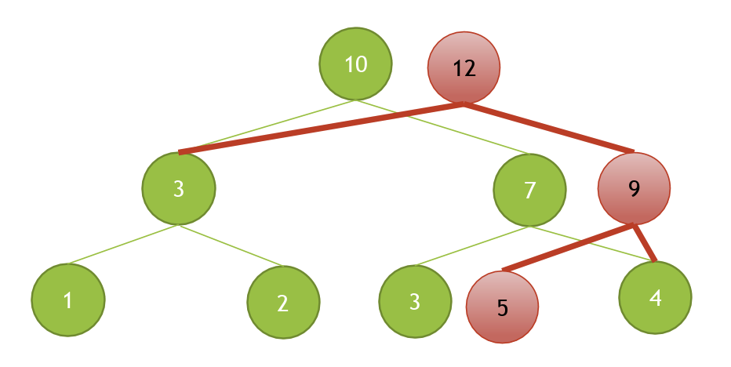

可持久化線段樹適用於查詢不同版本的線段樹，其運作方式非常簡單，就是將要更改的點先複製一遍，未更改的點則不動。而且每新增一個節點，就建立一個新的root，所以我們就可以透過不同的root來讀取不同版本的值。
如下圖：

以下為區間和的持久化線段樹，同時也為Zero Judge a331的AC Code。
#include <bits/stdc++.h>
using namespace std;
struct node {
int sum;
node *l, *r;
node(){l = r = nullptr;}
node(int n) : sum(n){l = r = nullptr;}
void up() {
sum = 0;
if (l)
sum += l->sum;
if (r)
sum += r->sum;
}
}*tree[100010];
int in[100010];
int n, m;
node* build(int l, int r) {
node *o = new node(0);
if (l == r)
return o;
int m = (l + r) >> 1;
o->l = build(l, m);
o->r = build(m + 1, r);
return o;
}
node* insert(node *o, int l, int r, int x, int num) {
if (l > x || x > r)
return o;
o = new node(*o);
if (l == r && r == x) {
o->sum = num;
return o;
}
int m = (l + r) >> 1;
o->l = insert(o->l, l, m, x, num);
o->r = insert(o->r, m + 1, r, x, num);
o->up();
return o;
}
int find(node *f, node *b, int l, int r, int k) {
if (l == r)
return l;
int m = (l + r) >> 1;
int nxt = b->l->sum - f->l->sum;
if (k <= nxt)
return find(f->l, b->l, l, m, k);
return find(f->r, b->r, m + 1, r, k - nxt);
}
int main() {
ios::sync_with_stdio(0);
cin.tie(0);
while (cin >> n >> m) {
vector<int> v;
for (int i = 1; i <= n; i++) {
cin >> in[i];
v.emplace_back(in[i]);
}
sort(v.begin(), v.end());
v.resize(unique(v.begin(), v.end()) - v.begin());
tree[0] = build(0, v.size());
for (int i = 1; i <= n; i++)
tree[i] = insert(tree[i - 1], 0, v.size(), lower_bound(v.begin(), v.end(), in[i]) - v.begin(), 1);
while (m--) {
int a, b, c;
cin >> a >> b >> c;
cout << v[find(tree[a - 1], tree[b], 0, v.size(), c)] << '\n';
}
}
return 0;
}